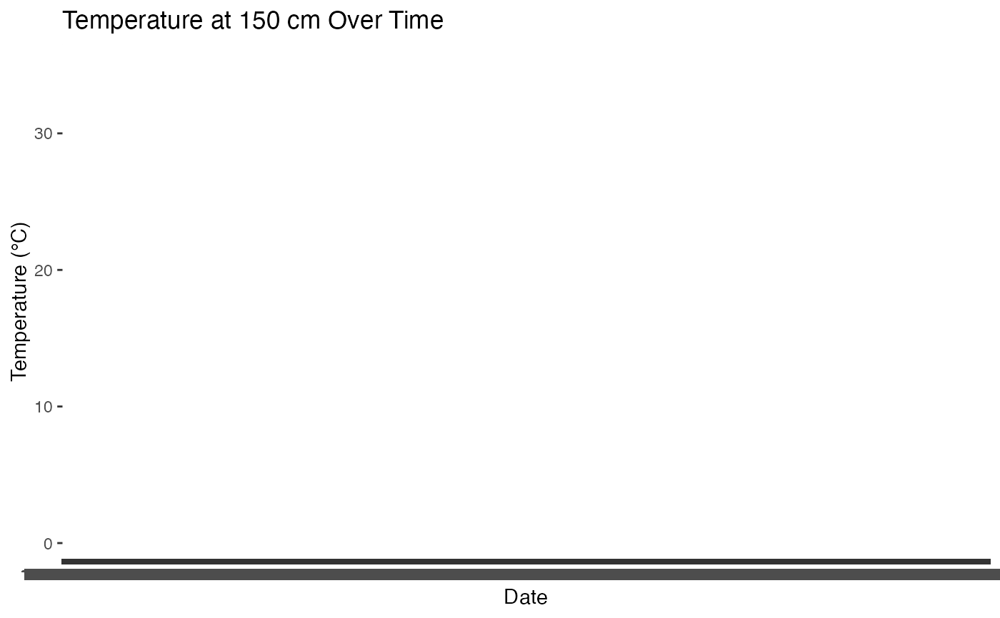

This dataset, named station_sample, provides daily weather observations from a specific weather monitoring station (NH0472). It includes various meteorological variables such as temperature, wind speed, and radiation. It serves as a resource for climate studies and analysis of day-to-day weather patterns.
data(station_sample)A data frame with the following columns:
Character. Identifier for the weather station (e.g., NH0472).
Date. Observation date in YYYY-MM-DD format (e.g., 1961-07-01).
Numeric. Temperature at 150 cm under shelter, in degrees Celsius (e.g., 11.1).
Numeric. Maximum daily temperature at 150 cm under shelter, in degrees Celsius (e.g., 13.4).
Numeric. Minimum daily temperature at 150 cm under shelter, in degrees Celsius (e.g., 8.8).
Numeric. Minimum daily temperature at 5 cm in open air, in degrees Celsius (e.g., 6.2).
Numeric. Minimum daily temperature at 50 cm in open air, in degrees Celsius (e.g., 4.5).
Numeric. Average daily soil temperature at 5 cm depth, in degrees Celsius (e.g., 10.0).
Numeric. Average daily soil temperature at 10 cm depth, in degrees Celsius (e.g., 9.8).
Numeric. Temperature at 5 cm under cover, in degrees Celsius (e.g., 7.3).
Numeric. Temperature at 50 cm under cover, in degrees Celsius (e.g., 6.1).
Numeric. Average daily humidity percentage (e.g., 75.3).
Numeric. Maximum daily humidity percentage (e.g., 95.0).
Numeric. Minimum daily humidity percentage (e.g., 60.5).
Numeric. Average daily atmospheric pressure, in hPa (e.g., 1015.6).
Numeric. Wind direction at 10 m height, in degrees from north (e.g., 270).
Numeric. Maximum daily wind speed, in m/s (e.g., 8.5).
Numeric. Global radiation in kJ/m² (e.g., 520.3).
Numeric. Net radiation in kJ/m² (e.g., 300.4).
Numeric. Daily tank evaporation in mm (e.g., 2.5).
Numeric. Potential evapotranspiration in mm (e.g., 4.0).
Numeric. Depth of the water table in meters (e.g., 1.8).
Numeric. Total daily cold hours (e.g., 15.6).
Numeric. Unit for cold hours, if applicable (e.g., -).
Each row represents daily observations from the NH0472 weather station. This dataset can be used to analyze seasonal and daily trends in weather parameters, including temperature variations, humidity levels, and wind conditions.
data(station_sample)
head(station_sample)
#> id fecha temperatura_abrigo_150cm temperatura_abrigo_150cm_maxima
#> 1 NH0472 1961-07-01 11.1 13.4
#> 2 NH0472 1961-07-02 5.5 10.5
#> 3 NH0472 1961-07-03 6.0 10.8
#> 4 NH0472 1961-07-04 NA NA
#> 5 NH0472 1961-07-05 12.4 14.8
#> 6 NH0472 1961-07-06 11.0 16.5
#> temperatura_abrigo_150cm_minima temperatura_intemperie_5cm_minima
#> 1 8.8 NA
#> 2 0.5 NA
#> 3 1.2 NA
#> 4 7.0 NA
#> 5 10.0 NA
#> 6 5.5 NA
#> temperatura_intemperie_50cm_minima temperatura_suelo_5cm_media
#> 1 NA NA
#> 2 NA NA
#> 3 NA NA
#> 4 NA NA
#> 5 NA NA
#> 6 NA NA
#> temperatura_suelo_10cm_media temperatura_inte_5cm
#> 1 NA NA
#> 2 NA NA
#> 3 NA NA
#> 4 NA NA
#> 5 NA NA
#> 6 NA NA
#> temperatura_intemperie_150cm_minima humedad_suelo precipitacion_pluviometrica
#> 1 NA NA 0
#> 2 NA NA 0
#> 3 NA NA 0
#> 4 NA NA 0
#> 5 NA NA 0
#> 6 NA NA 0
#> granizo nieve heliofania_efectiva heliofania_relativa tesion_vapor_media
#> 1 0 0 NA NA 9.8
#> 2 0 0 NA NA 7.9
#> 3 0 0 NA NA 7.5
#> 4 0 0 NA NA 14.9
#> 5 0 0 NA NA 17.2
#> 6 0 0 NA NA 11.5
#> humedad_media humedad_media_8_14_20 rocio_medio duracion_follaje_mojado
#> 1 NA 81 6.7 NA
#> 2 NA 80 3.6 NA
#> 3 NA 62 2.9 NA
#> 4 NA 93 12.9 NA
#> 5 NA 92 15.1 NA
#> 6 NA 80 9.0 NA
#> velocidad_viento_200cm_media direccion_viento_200cm
#> 1 14.4 NA
#> 2 4.8 NA
#> 3 7.2 NA
#> 4 8.8 NA
#> 5 4.8 NA
#> 6 14.4 NA
#> velocidad_viento_1000cm_media direccion_viento_1000cm velocidad_viento_maxima
#> 1 18 NA NA
#> 2 6 NA NA
#> 3 9 NA NA
#> 4 11 NA NA
#> 5 6 NA NA
#> 6 18 NA NA
#> presion_media radiacion_global radiacion_neta evaporacion_tanque
#> 1 NA NA NA NA
#> 2 NA NA NA NA
#> 3 NA NA NA NA
#> 4 NA NA NA NA
#> 5 NA NA NA NA
#> 6 NA NA NA NA
#> evapotranspiracion_potencial profundidad_napa horas_frio unidad_frio
#> 1 NA NA 0.000000 NA
#> 2 NA NA 15.600000 NA
#> 3 NA NA 14.500000 NA
#> 4 NA NA NA NA
#> 5 NA NA 0.000000 NA
#> 6 NA NA 3.272727 NA
# Example: Plotting temperature trends over time
if (requireNamespace("ggplot2", quietly = TRUE)) {
library(ggplot2)
ggplot(station_sample, aes(x = fecha, y = temperatura_abrigo_150cm)) +
geom_line() +
labs(title = "Temperature at 150 cm Over Time",
x = "Date", y = "Temperature (°C)")
}
#> Warning: Removed 66 rows containing missing values or values outside the scale range
#> (`geom_line()`).
#> `geom_line()`: Each group consists of only one observation.
#> ℹ Do you need to adjust the group aesthetic?
